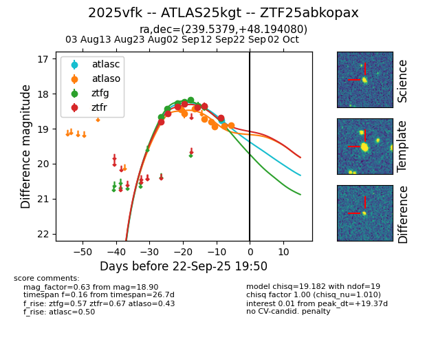
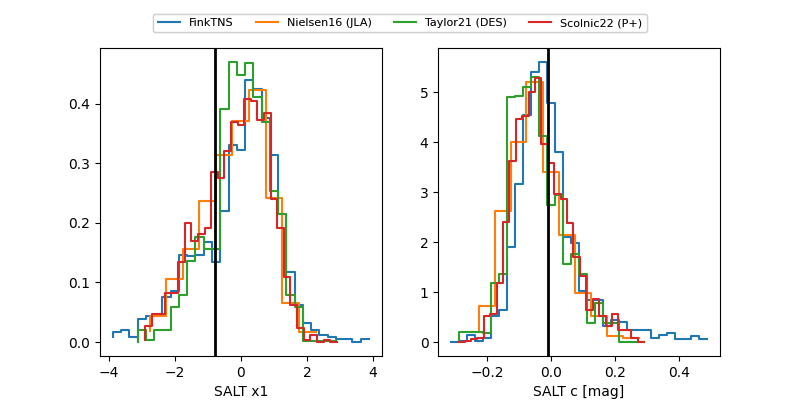

FINK: ZTF25abkopax
Lasair: ZTF25abkopax
ALeRCE: ZTF25abkopax
TNS: 2025vfk
YSE: 2025vfk
ZTF25abkopax (ztf,fink)
2025vfk (tns,yse)
ATLAS25kgt (atlas)
equatorial (ra, dec) = (239.5379,+48.19408)
galactic (l, b) = (76.0968,+48.32552)


last atlasc=18.76, atlaso=18.90, ztfg=18.70, ztfr=18.69
1 atlasc, 8 atlaso, 8 ztfg, 7 ztfr detections